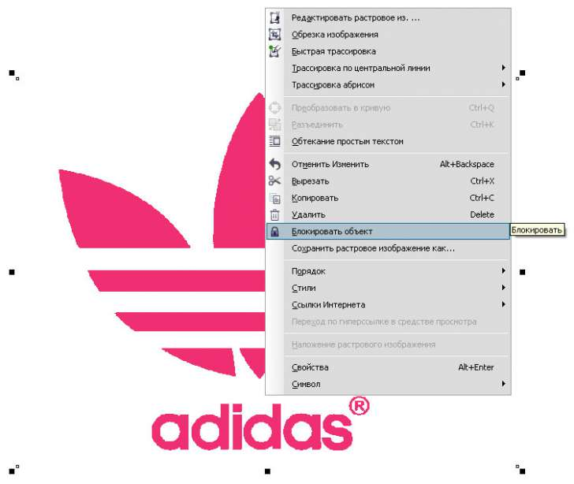
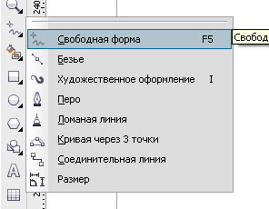
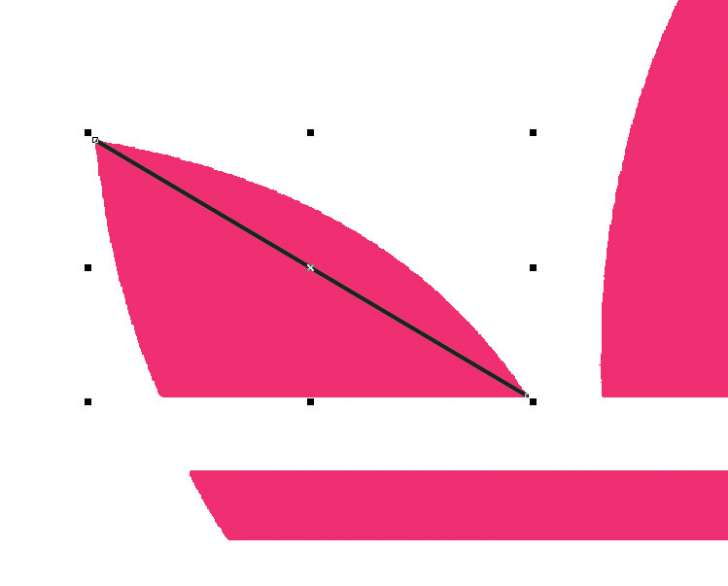
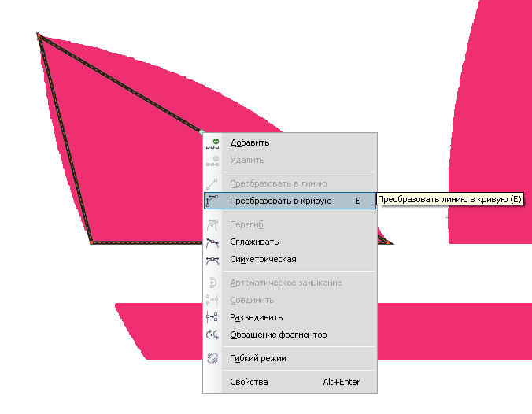
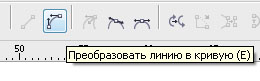
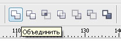
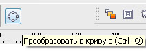

ВОПРОС / ОТВЕТ ДЛЯ НАЧИНАЮЩИХ
polzovatel-902 / 13.07.2010, 09:21/00:41
Форум:
Объясню на примере, чтоб было понятней... Открываю в кореле картинку (футболку с надписью) в формате JPG, мне нужно вытянуть из футболки надпись, т.е разъеденить файл... Говорят нужно формат изменить, еще что-то... Объясните, пожалуйста, что нужно сделать для этого...? Заранее спасибо.
polzovatel-902, а ты не пробовал нарисовать это лого?
Если этот жпег хорошего качества, то и трассировать ненадо, нарисуй квадрат, овал, неважно, вставь в контейнер и не мучайся!
В жипеге, когда приближаешь, видно, что углы расплывчатые какие-то, кривые...
А как перевести в формат корел?
Добавлено (13.07.2010, 11:25)
---------------------------------------------
Нужен формат CDR
Единственное что хочет "пользователь902" -- чтоб нашёлся сердобольный и сказал -"Давай векторизую"
Уж больно наигранный наивняк изображает...гы... :D
ЗЫ. Всего лишь констатирую факт, без оценки...
Кстате выложи файл --посмотрим -может там проблема на 12 секунд... :D
Сам понимаю, что наивно...) Просто я программу вижу второй раз, не такая она простая, чтоб за пару раз все понять и выучить... А тем более, не хочу, чтоб кто-то мне готовое предоставил. Мне и дальше надо будет в программе работать, надо самому учиться.
1. нарисовать
2. трасировать
3. почитать книжку
(перед тем как что то делать, изучи форматы их + и -, а так же, что такое dpi (разрешение) и разнице мкжду векторной и растровой графикой)
chally, а ты немного воздержись, это тема для начинающих!
polzovatel-902, с чего начать? Открывай.
Перед прорисовкой лучше обездвижить объект.
Чтоб вызвать менюшку используешь правую кнопку мыши.

Выбираешь инструмент для обрисовки.
Для начала посоветовал бы "Свободная форма".
Остальные пока для тебя будут тяжеловаты

Начинаешь рисование с вершины фигуры.

Далее ставишь курсор в последний узел и делаешь новый отрезок.
Для плотера необходимо чтоб контур был замкнут.
Последний отрезок должен прийти в начало первого.
Отрезки, которые надо искривить, переводишь в кривую.
Чтоб вызвать менюшку используешь правую кнопку мыши.

или

У кривой появятся рычаги для искривления или гнёшь, взяв за саму кривую.
...Попробуешь — разберёшься.
Чувствуешь разницу векторного и расстрового изображения?
Трассировкой такого не добьёшься :(
Разблокируешь и удаляешь подложку.
Выделяешь всё и Объединяешь 
С текстовой часть особо не заморачивался, так что шрифт примерный.
Результат.
При работе с текстом не забывай переводить его тоже в кривую 
Удачи!
Доброе время суток!
Подскажите друзья, есть ли разница между руссифицированным корелом и не рус.
(кроме перевода разумеется! :) )
stacho, если официальный русский, то с английским разницы никакой (кроме перевода разумеется!).
Всем, добрый вечер! Прошу помощи и совета.
Шеф сменил типографию. "Старые" макеты у него все были в RGB, в новой типографии по требованиям к макету: все цвета должны быть в CMYK. Все цвета в макете перевела в CMYK. Напечатали пробные пару листовок. Цвета кардниально отличаются. Наш мутно синий (в RGB - был "пустынная лазурь") превратился при печати в ярко-голубой,а кирпично-коричневый - в бледно рыжий. Второй раз сделать пробную печать мне не дали. Заказала на свой страх и риск. затемнив по максимуму синий и оранжевый. Однако в цвет опять не попала (это уже после печати тиража).
Вопросов собственно два :
1. как перевести из RGB в CMYK, что при печати цвета совпадали?
2. как настроить программу и компьютер, что бы ВИДЕТЬ цвет приближенный к реальному при печати тиража.
Заранее всем спасибо!
Страницы